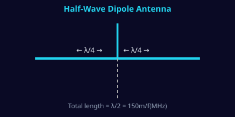

| Band | Freq (MHz) | Total Length | Each Leg |
|---|
| Antenna | Gain | Impedance | Pattern | Use |
|---|---|---|---|---|
| Isotropic (theoretical) | 0 dBi | — | Spherical | Reference only |
| Half-wave dipole | 2.15 dBi | 73 Ω | Figure-8 | HF/VHF base, portable |
| Quarter-wave vertical | ~5 dBi | 36–50 Ω | Omni (low elevation) | Mobile, broadcast |
| Yagi-Uda (3el) | 7–8 dBi | 25–75 Ω | Directional | VHF/UHF, point-to-point |
| Yagi-Uda (10el) | 12–14 dBi | 25–50 Ω | High directional | Weak-signal work |
| Patch (microstrip) | 6–8 dBi | 50 Ω | Hemispherical | WiFi, GPS, PCB mount |
| Parabolic dish | 25–45 dBi | 50 Ω (feed) | Very narrow | Microwave, satellite |
| Band | Frequency | λ (approx) | Applications |
|---|---|---|---|
| LF | 30–300 kHz | 1km–10km | Navigation, time signals |
| MF | 300kHz–3MHz | 100m–1km | AM broadcast, 160m ham |
| HF | 3–30 MHz | 10m–100m | Shortwave, 40/20/10m ham |
| VHF | 30–300 MHz | 1m–10m | FM, TV, 2m ham, NOAA |
| UHF | 300MHz–3GHz | 10cm–1m | LTE, 70cm ham, WiFi 2.4G |
| SHF | 3–30 GHz | 1cm–10cm | WiFi 5G/6G, radar, sat |